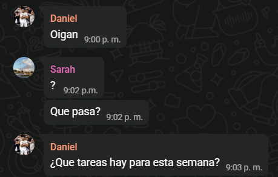
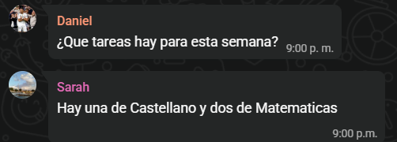
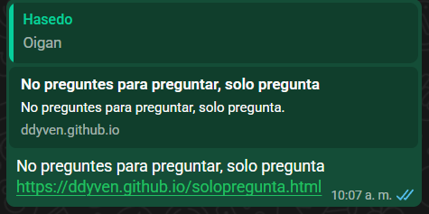

He visto a algunas personas preguntar asi:
Esto es una manera ineficiente de preguntar, ya que la respuesta se obtiene mucho mas tarde.
Si Daniel no dice "Oigan" o algo similar y pregunta de una vez, se puede ahorrar muchisimo tiempo:
Si ves a alguien preguntar asi, manda esto:
